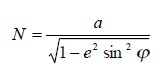
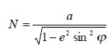
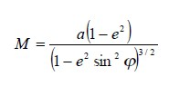
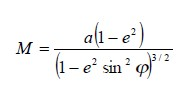
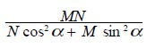
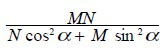

El valor de radio de curvatura en el primer vertical o en la gran normal es:


El valor del radio de curvatura en la seccion meridiana es:


Azimut:
El radio de curvatura para el azimut es:

El radio de curvatura para el azimut es:

El valor del radio de curvatura para la seccion promedio es: